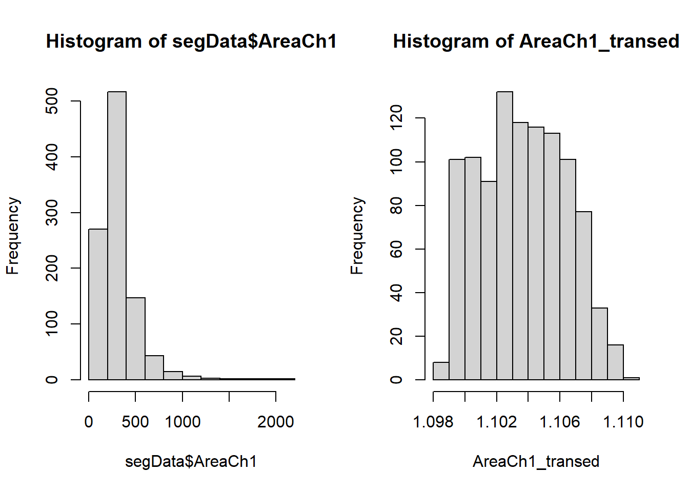
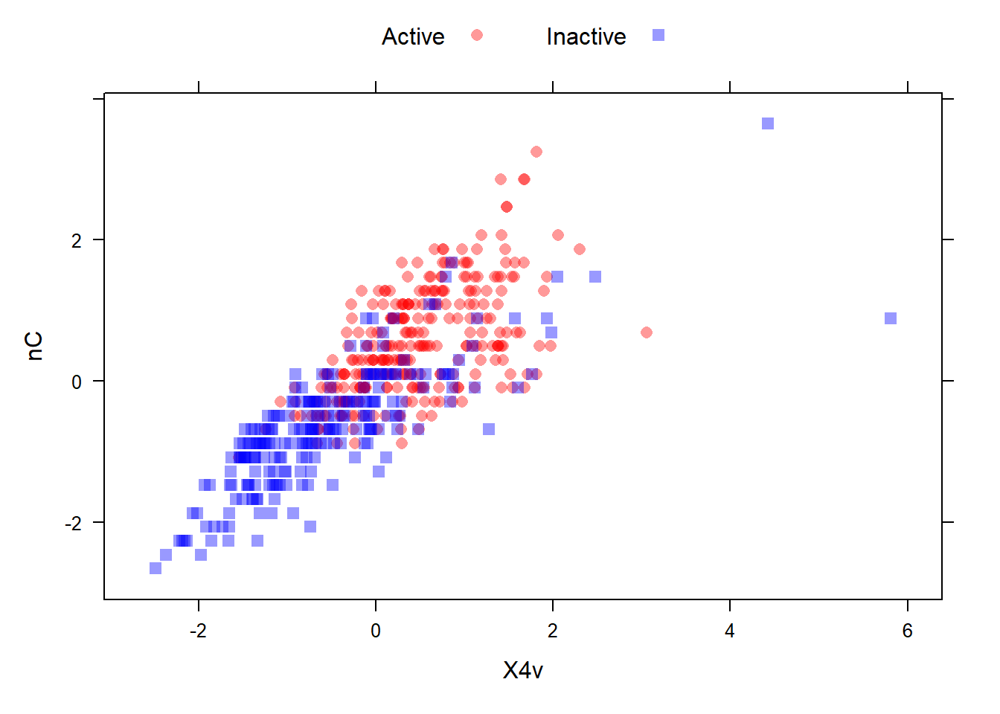
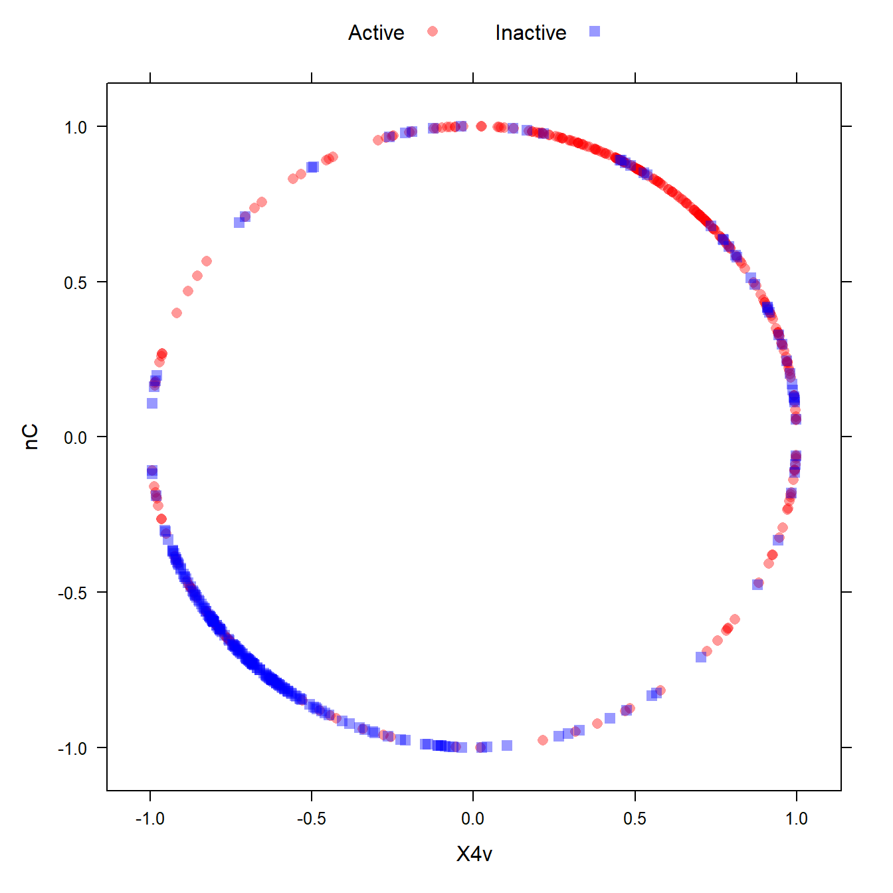
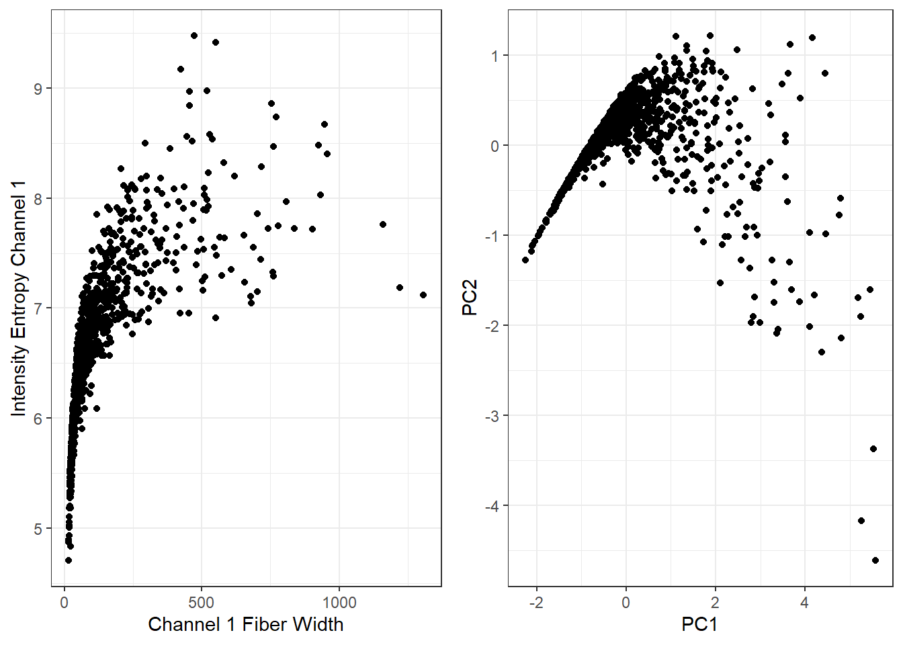
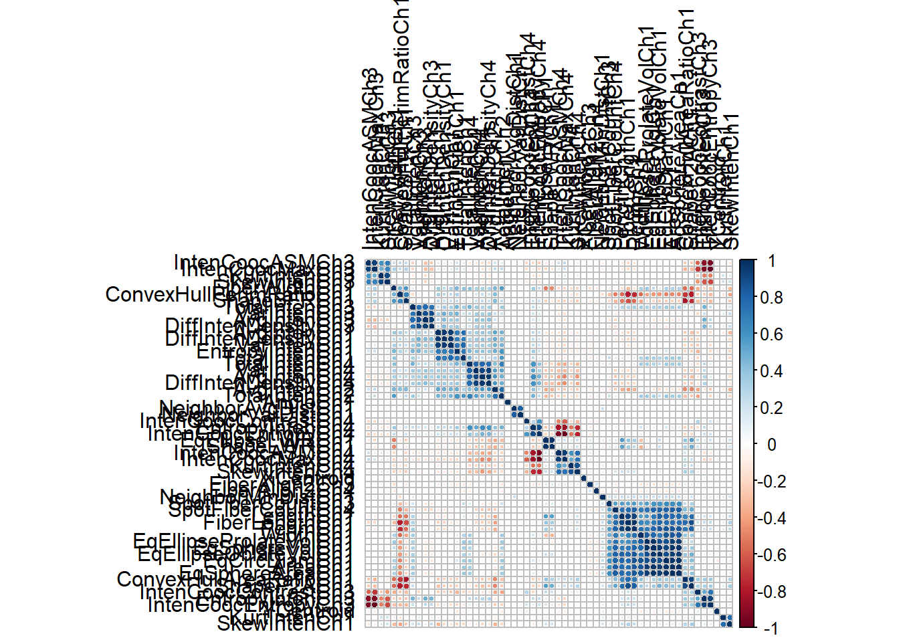

library(AppliedPredictiveModeling)
library(caret)
data("segmentationOriginal")
segData <- subset(segmentationOriginal, Case == "Train")
cellID <- segData$Cell
calss <- segData$Class
case <- segData$Case
segData <- segData[ , -(1:3)]
statusColNum <- grep("Status", names(segData))
statusColNum
## [1] 2 4 9 10 11 12 14 16 20 21 22 26 27 28 30 32 34 36 38
## [20] 40 43 44 46 48 51 52 55 56 59 60 63 64 68 69 70 72 73 74
## [39] 76 78 80 82 84 86 88 92 93 94 97 98 103 104 105 106 110 111 112
## [58] 114
segData <- segData[ , -statusColNum]
str(segData)
## 'data.frame': 1009 obs. of 58 variables:
## $ AngleCh1 : num 133.8 106.6 69.2 109.4 104.3 ...
## $ AreaCh1 : int 819 431 298 256 258 358 158 315 246 223 ...
## $ AvgIntenCh1 : num 31.9 28 19.5 18.8 17.6 ...
## $ AvgIntenCh2 : num 206 115 101 126 124 ...
## $ AvgIntenCh3 : num 69.9 63.9 28.2 13.6 22.5 ...
## $ AvgIntenCh4 : num 164.2 106.7 31 46.8 71.2 ...
## $ ConvexHullAreaRatioCh1 : num 1.26 1.05 1.2 1.08 1.08 ...
## $ ConvexHullPerimRatioCh1: num 0.797 0.935 0.866 0.92 0.931 ...
## $ DiffIntenDensityCh1 : num 31.9 32.5 26.7 28 27.9 ...
## $ DiffIntenDensityCh3 : num 43.1 36 22.9 14.9 16.1 ...
## $ DiffIntenDensityCh4 : num 79.3 51.4 26.4 32.7 36.2 ...
## $ EntropyIntenCh1 : num 6.09 5.88 5.42 5.38 5.18 ...
## $ EntropyIntenCh3 : num 6.64 6.68 5.44 4.15 5.49 ...
## $ EntropyIntenCh4 : num 7.88 7.14 5.78 6.19 6.62 ...
## $ EqCircDiamCh1 : num 32.3 23.4 19.5 18.1 18.2 ...
## $ EqEllipseLWRCh1 : num 1.56 1.38 3.39 1.38 1.62 ...
## $ EqEllipseOblateVolCh1 : num 2233 802 725 368 404 ...
## $ EqEllipseProlateVolCh1 : num 1433 583 214 267 250 ...
## $ EqSphereAreaCh1 : num 3279 1727 1195 1027 1036 ...
## $ EqSphereVolCh1 : num 17654 6751 3884 3096 3134 ...
## $ FiberAlign2Ch3 : num 0.488 0.301 0.22 0.364 0.359 ...
## $ FiberAlign2Ch4 : num 0.352 0.522 0.733 0.481 0.244 ...
## $ FiberLengthCh1 : num 64.3 21.1 43.1 22.3 26.5 ...
## $ FiberWidthCh1 : num 13.2 21.1 7.4 12.1 10.2 ...
## $ IntenCoocASMCh3 : num 0.02805 0.00686 0.03096 0.10816 0.01303 ...
## $ IntenCoocASMCh4 : num 0.01259 0.00614 0.01103 0.00995 0.00896 ...
## $ IntenCoocContrastCh3 : num 8.23 14.45 7.3 6.16 9.4 ...
## $ IntenCoocContrastCh4 : num 6.98 16.7 13.39 10.59 10.3 ...
## $ IntenCoocEntropyCh3 : num 6.82 7.58 6.31 5.04 6.96 ...
## $ IntenCoocEntropyCh4 : num 7.1 7.67 7.2 7.13 7.14 ...
## $ IntenCoocMaxCh3 : num 0.1532 0.0284 0.1628 0.3153 0.0739 ...
## $ IntenCoocMaxCh4 : num 0.0739 0.0232 0.0775 0.0586 0.0348 ...
## $ KurtIntenCh1 : num -0.249 -0.293 0.626 -0.365 -0.556 ...
## $ KurtIntenCh3 : num -0.331 1.051 0.128 1.083 -0.512 ...
## $ KurtIntenCh4 : num -0.265 0.151 -0.347 -0.626 -0.647 ...
## $ LengthCh1 : num 47.2 28.1 37.9 23.1 26.3 ...
## $ NeighborAvgDistCh1 : num 174 158 206 264 231 ...
## $ NeighborMinDistCh1 : num 30.1 34.9 33.1 38.4 29.8 ...
## $ NeighborVarDistCh1 : num 81.4 90.4 116.9 88.5 103.5 ...
## $ PerimCh1 : num 154.9 84.6 101.1 68.7 73.4 ...
## $ ShapeBFRCh1 : num 0.54 0.724 0.589 0.635 0.557 ...
## $ ShapeLWRCh1 : num 1.47 1.33 2.83 1.31 1.49 ...
## $ ShapeP2ACh1 : num 2.26 1.27 2.55 1.4 1.59 ...
## $ SkewIntenCh1 : num 0.399 0.472 0.882 0.547 0.443 ...
## $ SkewIntenCh3 : num 0.62 0.971 1 1.432 0.556 ...
## $ SkewIntenCh4 : num 0.527 0.325 0.604 0.704 0.137 ...
## $ SpotFiberCountCh3 : int 4 2 4 0 1 1 4 2 2 2 ...
## $ SpotFiberCountCh4 : int 11 6 7 5 4 5 4 2 5 1 ...
## $ TotalIntenCh1 : int 24964 11552 5545 4613 4340 14461 4743 88725 136957 79885 ...
## $ TotalIntenCh2 : int 160997 47510 28869 30855 30719 74259 15434 148012 57421 62235 ...
## $ TotalIntenCh3 : int 54675 26344 8042 3332 5548 14474 6265 58224 20304 23878 ...
## $ TotalIntenCh4 : int 128368 43959 8843 11466 17588 23099 17534 120536 15482 98948 ...
## $ VarIntenCh1 : num 18.8 17.3 13.8 13.9 12.3 ...
## $ VarIntenCh3 : num 56.7 37.7 30 18.6 17.7 ...
## $ VarIntenCh4 : num 118.4 49.5 24.7 40.3 41.9 ...
## $ WidthCh1 : num 32.2 21.2 13.4 17.5 17.7 ...
## $ XCentroid : int 215 371 487 211 172 276 239 95 438 386 ...
## $ YCentroid : int 347 252 295 495 207 385 404 95 16 14 ...6 常见的数据预处理方法
数据预处理对获得表现良好的模型有非常重要的作用！
是金子总会发光，一个未经雕琢的数据，本身的价值也难以得到体现，通过数据预处理，可以让数据展现真正的价值；另外，不同的模型对数据有不同的要求，通过预处理可以让数据符合算法的要求，这样也能提高模型的预测能力。这就是数据预处理的重要作用！
但是，一个本身就没有什么价值的数据，再好的模型也得不出理想的结果，这就是我常说的：鸭子是不会变成天鹅的！
这样一个雕琢数据，精细打磨的过程有一个专门的名字：特征工程。
但是要注意，数据预处理不是单纯的数字操作，一定要结合自己的实际情况！
今天的推文给大家介绍一些临床预测模型和机器学习常用的数据预处理方法。
最有效的数据预处理的方法来自于建模者对数据的理解，而不是通过任何数学方法。
6.1 加载R包和数据
6.2 中心化和标准化
某些算法对预测变量是有要求的，比如需要预测变量具有相同的尺度，如果有的预测变量范围是0.10.2，但是有的却是1000020000，这种变量间的绝大差距会影像某些模型的稳定性，所以需要想办法把它们变成差不多的范围（有个专有名词：无量纲化）。
中心化和标准化可以解决这样的问题。
中心化是将所有变量减去其均值，其结果是变换后的变量均值为0；标准化是将每个变量除以其自身的标准差，标准化迫使变量的标准差为1。
R语言中scale()函数可实现中心化和标准化，就不多做介绍了。
6.3 偏度问题
无偏分布类似我们常说的正态分布，有偏分布又分为右偏和左偏，分别类似正偏态分布和负偏态分布。
一个判断数据有偏的黄金标准：如果最大值与最小值的比例超过20，那么我们认为数据有偏。
可以通过计算偏度统计量来衡量偏度。如果预测变量分布是大致对称的，那么偏度将接近于0，右偏分布偏度大于0，越大说明偏的越厉害；左偏分布偏度小于0，越小说明偏的越厉害。
计算偏度的包很多。
使用e1071包查看变量的偏度：
library(e1071)
# 查看偏度
skewness(segData$AngleCh1)
## [1] -0.02426252
## [1] -0.02426252
# 查看每一列的偏度
skewValues <- apply(segData, 2, skewness)
head(skewValues)
## AngleCh1 AreaCh1 AvgIntenCh1 AvgIntenCh2 AvgIntenCh3 AvgIntenCh4
## -0.02426252 3.52510745 2.95918524 0.84816033 2.20234214 1.90047128也可以通过psych包查看：
psych::skew(segData$AngleCh1) # 偏度
## [1] -0.02426252
psych::kurtosi(segData$AngleCh1) # 峰度
## [1] -0.8594789通过对数据进行变换可以一定程度解决偏度的问题，常用的方法有：取对数(log)，平方根，倒数，Box&Cox法等。
log、平方根、倒数这些很简单，就不演示了，下面演示下BoxCox变换。
# 准备对数据进行BoxCox变换
Ch1AreaTrans <- BoxCoxTrans(segData$AreaCh1)
Ch1AreaTrans
## Box-Cox Transformation
##
## 1009 data points used to estimate Lambda
##
## Input data summary:
## Min. 1st Qu. Median Mean 3rd Qu. Max.
## 150.0 194.0 256.0 325.1 376.0 2186.0
##
## Largest/Smallest: 14.6
## Sample Skewness: 3.53
##
## Estimated Lambda: -0.9
# 进行变换
AreaCh1_transed <- predict(Ch1AreaTrans, segData$AreaCh1)
# 查看变换前、后的数据
head(segData$AreaCh1)
## [1] 819 431 298 256 258 358
head(AreaCh1_transed)
## [1] 1.108458 1.106383 1.104520 1.103554 1.103607 1.105523这里可以看到caret对数据预处理的方式，首先是选择方法，然后使用predict()函数把变换应用到具体的变量上。这是caret的基本操作，大家一定要记住！
对于变换前后的数据变化，只看数字没有直观的感受，下面给大家画图演示。
# 画图看变换前后
opar <- par(mfrow=c(1,2))
hist(segData$AreaCh1)
hist(AreaCh1_transed)
par(opar)可以明显看到变换前是右偏分布，变换后基本接近无偏，可以再次计算偏度看看：
psych::skew(AreaCh1_transed)
## [1] 0.0976087下面是BoxCox变换的一点点扩展，不看也影响不大。
BoxCox变换需要一个参数lambda，这个参数需要我们计算并指定，如上使用caret进行变换时，它会自动帮我们处理好，其中一句代码显示Estimated Lambda: -0.9，也就是lambda=0.9。
还有很多R包可以实现BoxCox变换，其中比较简单的是forecast，简单演示如下：
library(forecast)
best.lambda <- BoxCox.lambda(segData$AreaCh1) # 计算lambda
best.lambda
## [1] -0.9999264
AreaCh1.transformed <- BoxCox(segData$AreaCh1, lambda = best.lambda) # 变换
head(AreaCh1.transformed)
## [1] 0.9988519 0.9977522 0.9967163 0.9961655 0.9961958 0.9972789
y0 <- InvBoxCox(AreaCh1.transformed,lambda=best.lambda) # 还原6.4 解决离群值
离群值其实是有明确定义的，通常我们会选择直接删除离群值，但是还是要根据实际情况来看，有的离群值是非常有意义的，这样的离群值不能直接删除。
- 有的离群值可能是数据录入时不小心输错了，比如错把收缩压132mmHg录成了 -132mmHg，只需要改正即可；
- 在样本量较小时，不宜直接删除离群值，有的离群值可能是因为数据来自一个明显有偏的分布，只是因为我们的样本量太小无法观测到这个偏度；
- 有些离群值可能来自一个特殊的子集，只是这个子集才刚开始被收集到。
有些模型对离群值很敏感，比如线性模型，这样是需要处理的，一个常见的方法是空间表示变换，该变换将预测变量取值映射到高纬的球上，它会把所有样本变换到离球心相等的球面上。在caret中可以实现。关于它的具体数学运算过程，感兴趣的自己了解即可，我不太感兴趣。
在进行空间表示变换前，最好先进行中心化和标准化，这也和它的数学计算有关，我也不太感兴趣。
查看变换前的图形：
# 变换前的图形
data(mdrr)
transparentTheme(trans = .4)
plotSubset <- data.frame(scale(mdrrDescr[, c("nC", "X4v")]))
xyplot(nC ~ X4v,
data = plotSubset,
groups = mdrrClass,
auto.key = list(columns = 2))
查看变换后的图形：
# 变换后的图形
transformed <- spatialSign(plotSubset)
transformed <- as.data.frame(transformed)
xyplot(nC ~ X4v,
data = transformed,
groups = mdrrClass,
auto.key = list(columns = 2)) 
是不是很神奇？
6.5 降维和特征提取
有很多方法，比如PCA，ICA，PLS，UMAP等，最流行的还是PCA，主要是它给出的主成分是彼此不相关的，这恰好符合一些模型的需求。
对数据进行PCA变换之前，最好先解决偏度问题，然后进行中心化和标准化，和它的数学计算过程有关，感兴趣的自己了解。
可视化前后不同：
# 主成分分析，可参考我之前的推文
pr <- prcomp(~ AvgIntenCh1 + EntropyIntenCh1,
data = segData,
scale. = TRUE)
# 可视化前后图形
library(ggplot2)
p1 <- ggplot(segData, aes(AvgIntenCh1,EntropyIntenCh1))+
geom_point()+
labs(x="Channel 1 Fiber Width",y="Intensity Entropy Channel 1")+
theme_bw()
p2 <- ggplot(as.data.frame(pr$x), aes(PC1,PC2))+
geom_point()+
theme_bw()
cowplot::plot_grid(p1,p2)
6.6 处理缺失值
缺失值处理是一个宏大的话题，首先要了解缺失值的类型：
- 完全随机缺失：若某变量的缺失数据与其他任何观测或未观测变量都不相关，则数据 为完全随机缺失（MCAR）。注意，如果每个有缺失值的变量都是MCAR，那么可以将数据完整的实例看作对更大数据集的一个简单随机抽样。
- 随机缺失：若某变量上的缺失数据与其他观测变量相关，与它自己的未观测值不相关， 则数据为随机缺失（MAR）。
- 非随机缺失：若缺失数据不属于MCAR和MAR，则数据为非随机缺失（NMAR）。
大部分处理缺失数据的方法都假定数据是MCAR或MAR。缺失值的处理方法非常多，理论也非常复杂，下面是一些常见的缺失值处理方法：
6.7 过滤
这里的过滤和解决共线性，其实部分属于特征选择的范围，就是大家常见的自变量选择问题，这个问题在以后的推文中还会详细介绍。
冗余的变量通常增加了模型的复杂度而非信息量
主要是过滤两种变量：(近)零方差变量和高度相关变量。
如果一个变量只有1个值，那么这个变量的方差为0；如果一个变量只有少量不重复的取值，这种变量称为近零方差变量；这2种变量包含的信息太少了，应当过滤；
检测近零方差变量的准则是：
- 不重复取值的数目与样本量的比值低（比如10%）；
- 最高频数和次高频数的比值高（比如20%）
如果两个变量相关性太高，那么它们携带的信息可能很多是重叠的，会对某些模型产生较大的影响，应当解决。
移除共线变量的方法如下：
- 计算预测变量的相关系数矩阵
- 找出相关系数绝对值最大的那对预测变量（记为变量A和B）
- 分别计算A和B和其他预测变量的相关系数
- 如果A的平均相关系数更大，移除A，否则移除B
- 重复步骤2-4，直至所有相关系数的绝对值都低于设定的阈值
caret可以轻松实现以上过程。
使用mdrr数据集演示。其中一列nR11大部分都是501，这种变量方差是很小的！
data(mdrr)
table(mdrrDescr$nR11) # 大部分值都是0
##
## 0 1 2
## 501 4 23
sd(mdrrDescr$nR11)^2 # 方差很小！
## [1] 0.1731787使用nearZeroVar()找出零方差和近零方差变量，结果中会给出zeroVar和nzv两列，用逻辑值表示是不是近零方差变量或者零方差变量。
nzv <- nearZeroVar(mdrrDescr, saveMetrics= TRUE)
nzv[nzv$nzv,][1:10,]
## freqRatio percentUnique zeroVar nzv
## nTB 23.00000 0.3787879 FALSE TRUE
## nBR 131.00000 0.3787879 FALSE TRUE
## nI 527.00000 0.3787879 FALSE TRUE
## nR03 527.00000 0.3787879 FALSE TRUE
## nR08 527.00000 0.3787879 FALSE TRUE
## nR11 21.78261 0.5681818 FALSE TRUE
## nR12 57.66667 0.3787879 FALSE TRUE
## D.Dr03 527.00000 0.3787879 FALSE TRUE
## D.Dr07 123.50000 5.8712121 FALSE TRUE
## D.Dr08 527.00000 0.3787879 FALSE TRUE去掉近零方差变量：
dim(mdrrDescr)
## [1] 528 342
nzv <- nearZeroVar(mdrrDescr)
filteredDescr <- mdrrDescr[, -nzv]
dim(filteredDescr)
## [1] 528 297下面是处理高度相关的变量。
# 相关系数矩阵
correlations <- cor(segData)
dim(correlations)
## [1] 58 58
# 可视化相关系数矩阵，中间几个颜色深的就是高度相关的变量
library(corrplot)
corrplot(correlations, order = "hclust",tl.col = "black")
去掉高度相关的变量：
# 阈值设为0.75
highCorr <- findCorrelation(correlations, cutoff = 0.75)
length(highCorr)
## [1] 32
head(highCorr)
## [1] 23 40 43 36 7 15
# 去掉高度相关的变量
filteredSegData <- segData[, -highCorr]6.8 共线性
假设一个下面这种的数据，其中第2列和第3列的值加起来和第1列一样，第4,5,6列的值起来也和第1列一样。这种数据的某些变量间是有高度共线性的。
ltfrDesign <- matrix(0, nrow=6, ncol=6)
ltfrDesign[,1] <- c(1, 1, 1, 1, 1, 1)
ltfrDesign[,2] <- c(1, 1, 1, 0, 0, 0)
ltfrDesign[,3] <- c(0, 0, 0, 1, 1, 1)
ltfrDesign[,4] <- c(1, 0, 0, 1, 0, 0)
ltfrDesign[,5] <- c(0, 1, 0, 0, 1, 0)
ltfrDesign[,6] <- c(0, 0, 1, 0, 0, 1)
ltfrDesign
## [,1] [,2] [,3] [,4] [,5] [,6]
## [1,] 1 1 0 1 0 0
## [2,] 1 1 0 0 1 0
## [3,] 1 1 0 0 0 1
## [4,] 1 0 1 1 0 0
## [5,] 1 0 1 0 1 0
## [6,] 1 0 1 0 0 1findLinearCombos()可以通过算法给出需要去除的变量，关于具体的方法可以官网查看。
comboInfo <- findLinearCombos(ltfrDesign)
comboInfo
## $linearCombos
## $linearCombos[[1]]
## [1] 3 1 2
##
## $linearCombos[[2]]
## [1] 6 1 4 5
##
##
## $remove
## [1] 3 6结果给出了需要去除的变量是第3列和第6列。
# 去除第3列和第6列
ltfrDesign[, -comboInfo$remove]
## [,1] [,2] [,3] [,4]
## [1,] 1 1 1 0
## [2,] 1 1 0 1
## [3,] 1 1 0 0
## [4,] 1 0 1 0
## [5,] 1 0 0 1
## [6,] 1 0 0 06.9 构建虚拟变量
最常见的回归分析中的哑变量设置，可以参考之前的推文，详细介绍了常见的分类变量的编码方式：分类变量进行回归分析时的编码方案
这里介绍下独热编码（one-hot encoding），和哑变量编码稍有不同，哑变量是变成k-1个变量，独热编码是变成k个变量。
使用以下数据进行演示：
data("cars", package = "caret")
head(cars)
## Price Mileage Cylinder Doors Cruise Sound Leather Buick Cadillac Chevy
## 1 22661.05 20105 6 4 1 0 0 1 0 0
## 2 21725.01 13457 6 2 1 1 0 0 0 1
## 3 29142.71 31655 4 2 1 1 1 0 0 0
## 4 30731.94 22479 4 2 1 0 0 0 0 0
## 5 33358.77 17590 4 2 1 1 1 0 0 0
## 6 30315.17 23635 4 2 1 0 0 0 0 0
## Pontiac Saab Saturn convertible coupe hatchback sedan wagon
## 1 0 0 0 0 0 0 1 0
## 2 0 0 0 0 1 0 0 0
## 3 0 1 0 1 0 0 0 0
## 4 0 1 0 1 0 0 0 0
## 5 0 1 0 1 0 0 0 0
## 6 0 1 0 1 0 0 0 0
type <- c("convertible", "coupe", "hatchback", "sedan", "wagon")
cars$Type <- factor(apply(cars[, 14:18], 1, function(x) type[which(x == 1)]))
carSubset <- cars[sample(1:nrow(cars), 20), c(1, 2, 19)]
# 上面是数据生成过程，不重要，记住下面这个数据的样子即可！！
head(carSubset)
## Price Mileage Type
## 627 36332.89 25153 sedan
## 692 15233.16 32535 sedan
## 548 27714.05 5379 sedan
## 49 29844.20 23143 sedan
## 295 13688.95 21611 sedan
## 523 19116.13 26252 sedan
levels(carSubset$Type) # Type是一个因子型变量
## [1] "convertible" "coupe" "hatchback" "sedan" "wagon"现在把Type这个变量进行独热编码。
使用dummyVars构建虚拟变量：
simpleMod <- dummyVars(~Mileage + Type, # 用mileage和Type对价格进行预测
data = carSubset,
levelsOnly = TRUE) # 从列名中移除因子变量的名称
simpleMod
## Dummy Variable Object
##
## Formula: ~Mileage + Type
## 2 variables, 1 factors
## Factor variable names will be removed
## A less than full rank encoding is used接下来就可以使用predict和simpleMod对训练集进行生成虚拟变量的操作了：
predict(simpleMod, head(carSubset))
## Mileage convertible coupe hatchback sedan wagon
## 627 25153 0 0 0 1 0
## 692 32535 0 0 0 1 0
## 548 5379 0 0 0 1 0
## 49 23143 0 0 0 1 0
## 295 21611 0 0 0 1 0
## 523 26252 0 0 0 1 0可以看到Type变量没有了，完成了虚拟变量的转换。
假如你认为车型和里程有交互影响，则可以使用:表示：
withInteraction <- dummyVars(~Mileage + Type + Mileage:Type,
data = carSubset,
levelsOnly = TRUE)
withInteraction
## Dummy Variable Object
##
## Formula: ~Mileage + Type + Mileage:Type
## 2 variables, 1 factors
## Factor variable names will be removed
## A less than full rank encoding is used应用于新的数据集：
predict(withInteraction, head(carSubset))
## Mileage convertible coupe hatchback sedan wagon Mileage:Typeconvertible
## 627 25153 0 0 0 1 0 0
## 692 32535 0 0 0 1 0 0
## 548 5379 0 0 0 1 0 0
## 49 23143 0 0 0 1 0 0
## 295 21611 0 0 0 1 0 0
## 523 26252 0 0 0 1 0 0
## Mileage:Typecoupe Mileage:Typehatchback Mileage:Typesedan Mileage:Typewagon
## 627 0 0 25153 0
## 692 0 0 32535 0
## 548 0 0 5379 0
## 49 0 0 23143 0
## 295 0 0 21611 0
## 523 0 0 26252 06.10 区间化预测变量
主要是为了好解释结果，比如把血压分为高血压1级、2级、3级，把贫血分为轻中重极重等，这样比如你做logistic回归，可以说血压每增高一个等级，因变量的风险增加多少，但是你如果说血压值每增加1mmHg，因变量增加多少倍，这就有点扯了。
6.11 多个预处理步骤放一起
在caret中是通过preProcess()函数里面的method参数实现的，把不同的预处理步骤按照顺序写好即可。
library(AppliedPredictiveModeling)
data(schedulingData)
str(schedulingData)
## 'data.frame': 4331 obs. of 8 variables:
## $ Protocol : Factor w/ 14 levels "A","C","D","E",..: 4 4 4 4 4 4 4 4 4 4 ...
## $ Compounds : num 997 97 101 93 100 100 105 98 101 95 ...
## $ InputFields: num 137 103 75 76 82 82 88 95 91 92 ...
## $ Iterations : num 20 20 10 20 20 20 20 20 20 20 ...
## $ NumPending : num 0 0 0 0 0 0 0 0 0 0 ...
## $ Hour : num 14 13.8 13.8 10.1 10.4 ...
## $ Day : Factor w/ 7 levels "Mon","Tue","Wed",..: 2 2 4 5 5 3 5 5 5 3 ...
## $ Class : Factor w/ 4 levels "VF","F","M","L": 2 1 1 1 1 1 1 1 1 1 ...
# 中心化、标准化、YeoJohnson变换
pp_hpc <- preProcess(schedulingData[, -8],
method = c("center", "scale", "YeoJohnson"))
pp_hpc
## Created from 4331 samples and 7 variables
##
## Pre-processing:
## - centered (5)
## - ignored (2)
## - scaled (5)
## - Yeo-Johnson transformation (5)
##
## Lambda estimates for Yeo-Johnson transformation:
## -0.08, -0.03, -1.05, -1.1, 1.44
# 应用于数据
transformed <- predict(pp_hpc, newdata = schedulingData[, -8])
head(transformed)
## Protocol Compounds InputFields Iterations NumPending Hour Day
## 1 E 1.2289592 -0.6324580 -0.0615593 -0.554123 0.004586516 Tue
## 2 E -0.6065826 -0.8120473 -0.0615593 -0.554123 -0.043733201 Tue
## 3 E -0.5719534 -1.0131504 -2.7894869 -0.554123 -0.034967177 Thu
## 4 E -0.6427737 -1.0047277 -0.0615593 -0.554123 -0.964170752 Fri
## 5 E -0.5804713 -0.9564504 -0.0615593 -0.554123 -0.902085020 Fri
## 6 E -0.5804713 -0.9564504 -0.0615593 -0.554123 0.698108782 Wed
mean(schedulingData$NumPending == 0)
## [1] 0.7561764
# 进行中心化、标准化、YeoJohnson、nzv
pp_no_nzv <- preProcess(schedulingData[, -8],
method = c("center", "scale", "YeoJohnson", "nzv"))
pp_no_nzv
## Created from 4331 samples and 7 variables
##
## Pre-processing:
## - centered (4)
## - ignored (2)
## - removed (1)
## - scaled (4)
## - Yeo-Johnson transformation (4)
##
## Lambda estimates for Yeo-Johnson transformation:
## -0.08, -0.03, -1.05, 1.44
predict(pp_no_nzv, newdata = schedulingData[1:6, -8])
## Protocol Compounds InputFields Iterations Hour Day
## 1 E 1.2289592 -0.6324580 -0.0615593 0.004586516 Tue
## 2 E -0.6065826 -0.8120473 -0.0615593 -0.043733201 Tue
## 3 E -0.5719534 -1.0131504 -2.7894869 -0.034967177 Thu
## 4 E -0.6427737 -1.0047277 -0.0615593 -0.964170752 Fri
## 5 E -0.5804713 -0.9564504 -0.0615593 -0.902085020 Fri
## 6 E -0.5804713 -0.9564504 -0.0615593 0.698108782 Wed如果你用过tidymodels，那你应该知道里面的数据预处理步骤是通过recipes包完成的，每一步都是step_xx，说实话我觉得caret的这种方式更加简洁易懂！
以上就是数据预处理的一般过程，一个caret包可以解决上面所有的问题，有兴趣的小伙伴可以自行学习。
数据预处理是一个非常系统且专业的过程，如同开头说的那样：最有效的编码数据的方法来自于建模者对数据的理解，而不是通过任何数学方法，在对数据进行预处理之前，一定要仔细理解自己的数据哦，结果导向的思维是不对的哦！
本文简单介绍了常见的数据预处理方法和简单的实现方法，并且大量使用了caret包，但是目前在R中实现数据预处理有更好的方法了，那就是tidymodels和mlr3，这部分内容可参考：